Desk list canvas (PHILO-9-04)
DRAFT round two for the owner's ratification. The product app on a real hub (isolated HOME); board 0 is today, boards 1-7 swap three species for marked proposal copies. Numbers: shots/facts.json; details: README.md.
Questions
- The selection token: the accent ground with the page ink, desk-wide? 4.26:1 against the field (today 1.14:1); the selected text 4.56:1. Recommended: yes.
- At 393, fold Kind, Zone and Attention into a second line under the name, their sort Buttons in the Name header? Other options: scroll the table sideways; drop Zone and Attention at 393. Recommended: the fold line.
Settled, not asked: every desk menu keeps its whole panel inside the viewport (the WorkMenu species), and at 393 each menu row is 44 px.
Measurements
| Measure | Today 1440 | Today 393 | Proposal 1440 | Proposal 393 |
|---|---|---|---|---|
| Text under 12 px (list and open menu) | 41-46 | 28-31 | 0 | 0 |
| Raw sort buttons | 4 | 4 | 0 | 0 |
| Cells past the right edge | 0 | 83-86 | 0 | 0 |
| Menu row height | 28 | 28 | 28 | 44 |
| Row menu Delete bottom / viewport | 875 / 900 | 867 / 852 (cut 15) | 875 / 900 | 841 / 852 |
| ATTN 1 contrast | 3.92:1 | 3.92:1 | 4.99:1 | 4.99:1 |
| Pointer ownership, real pointer + elementFromPoint, 9 points each (controls / points) | not probed | not probed | 23 / 207, all owned | 23 / 207, all owned |
| Selection vs field | 1.14:1 | 1.14:1 | 4.26:1 | 4.26:1 |
| Selected text vs selection | 14.21:1 | 14.21:1 | 4.56:1 | 4.56:1 |
| Page width | 1440 | 393 | 1440 | 393 on every board |
0 · Today: the list
"24 SHOWNS OF 24"; at 393 only NAME shows.
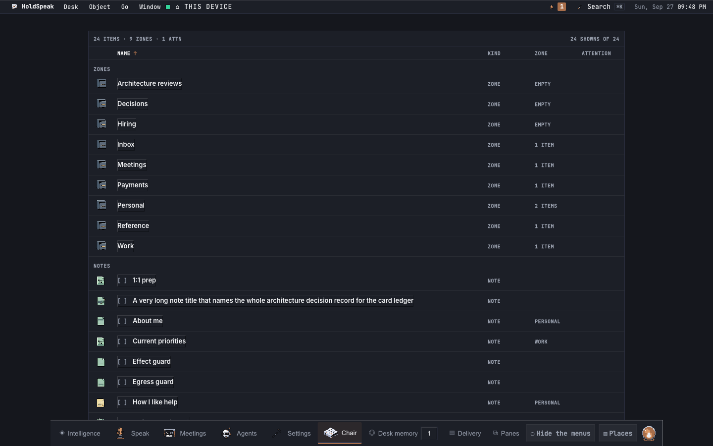
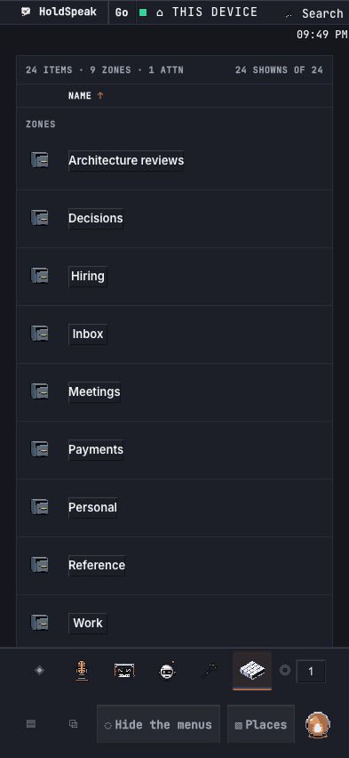
0 · Today: the row menu near the bottom
At 393 Delete is cut 15 px.
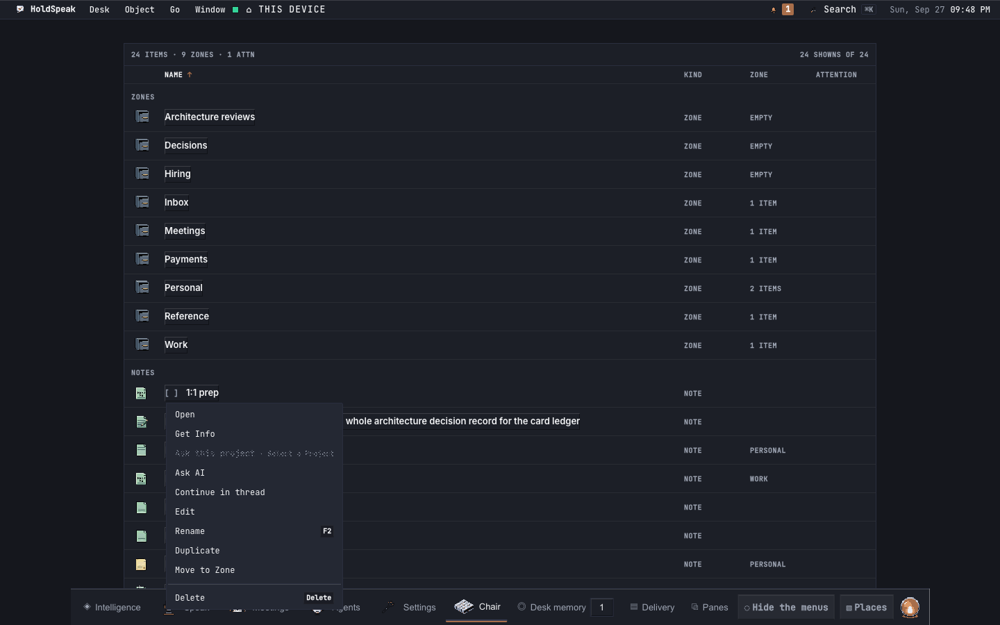
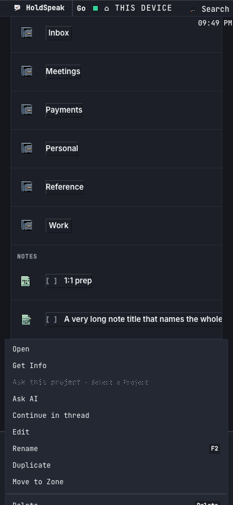
0 · Today: the selection (zone name field)
1.14:1: the selected name looks unselected.
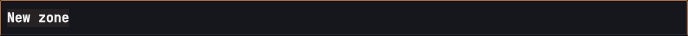
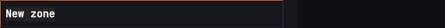
0 · Today: the selection (palette)
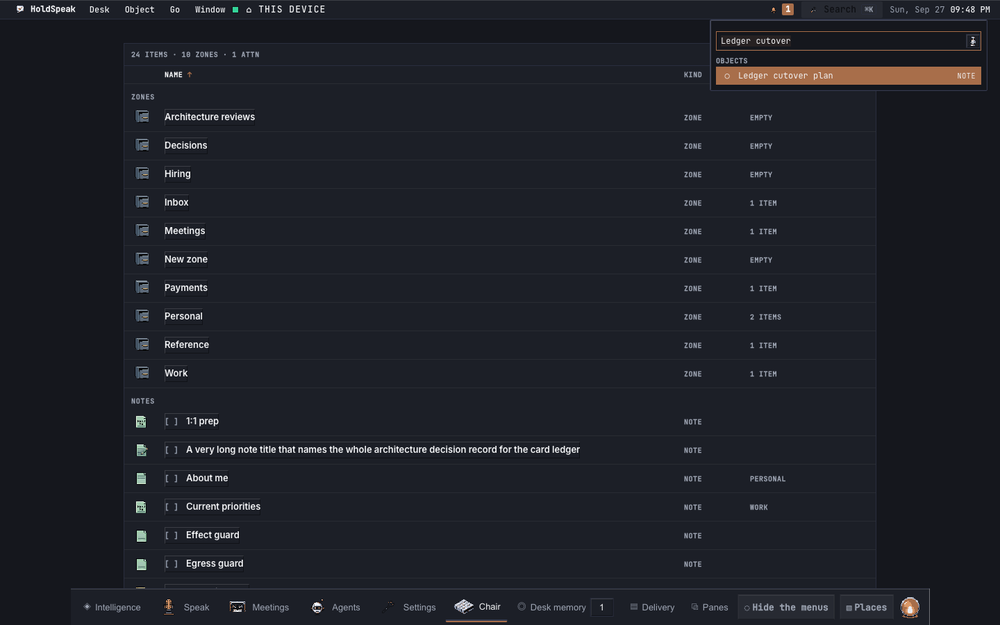
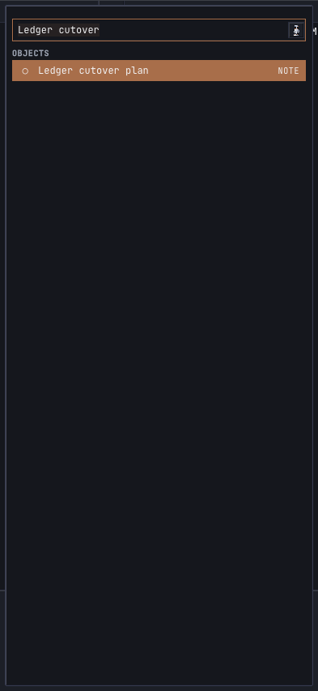
1 · The list
"24 SHOWN OF 24"; 12 px; at 393 the fold line and the sort Buttons in the Name header.
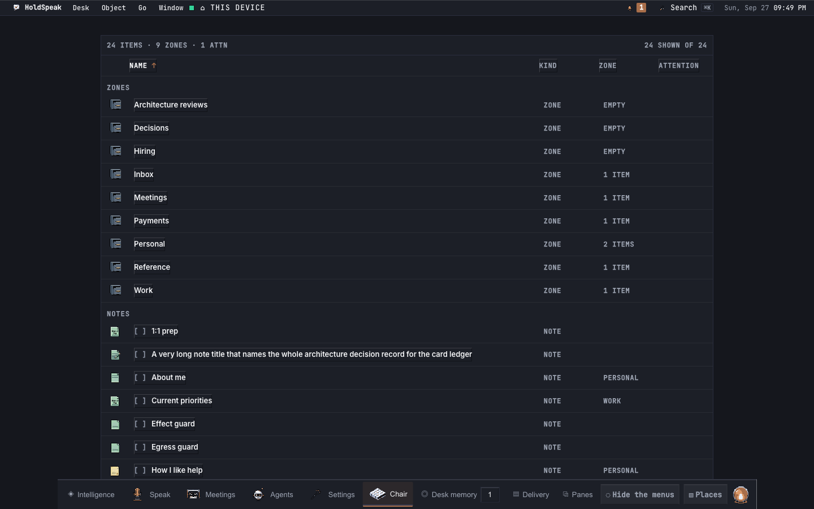
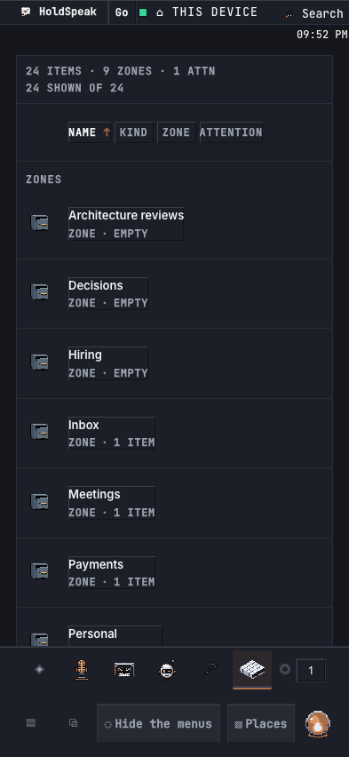
2 · Sorted by Zone
The pressed sort Button shows ↑.
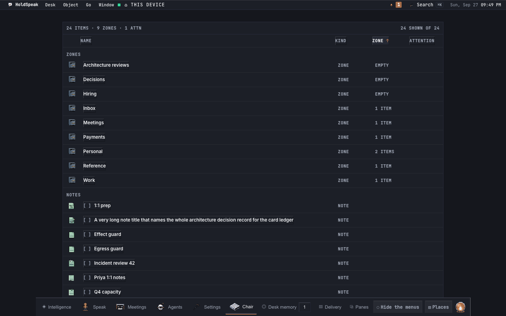
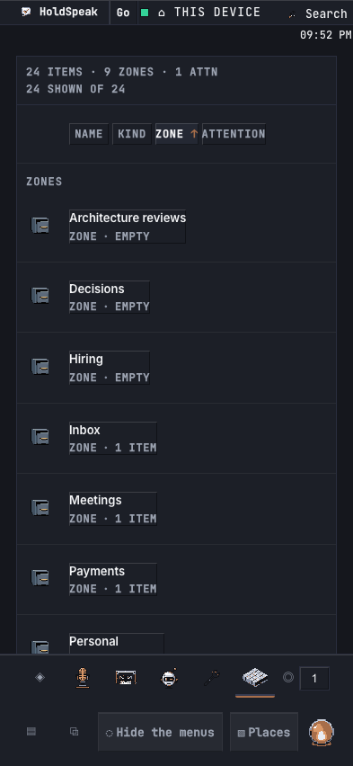
3 · The row menu near the bottom
At 393 each row is 44 px and the panel stays in view: Delete 797-841 of 852.
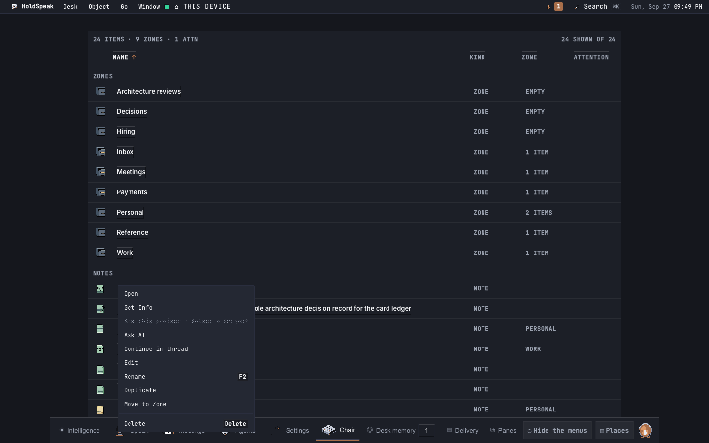
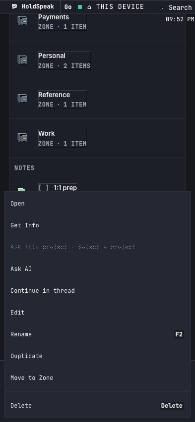
4 · One shown
Dive into Payments: "1 SHOWN OF 1"; the page stays 393 wide.
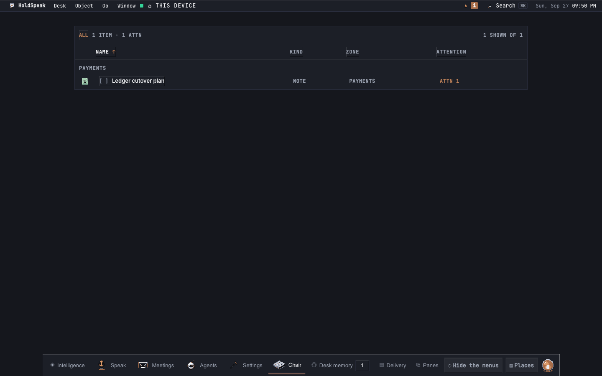
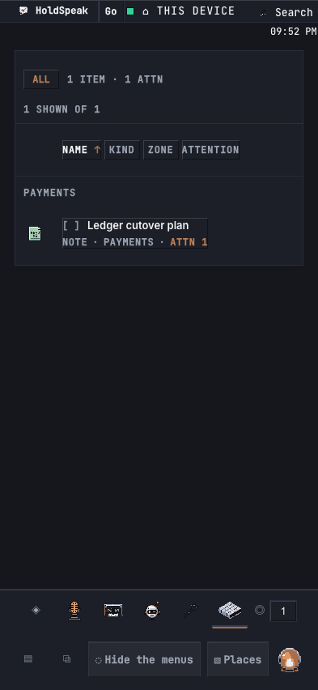
7 · Attention
A real proposal waiting on the note: ATTN 1 at 12 px, 4.99:1.
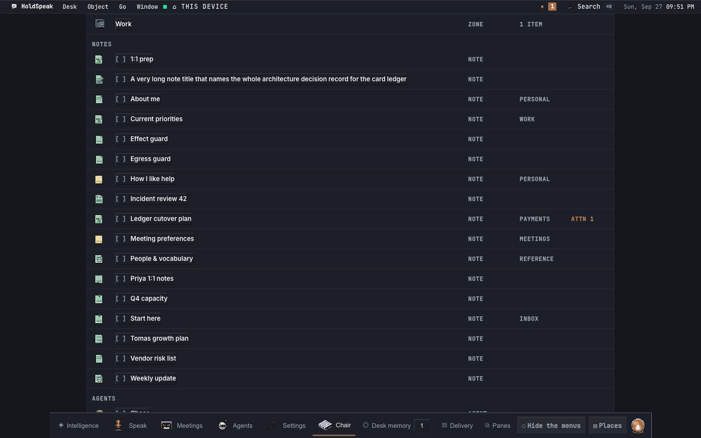
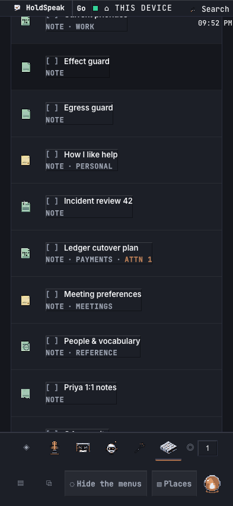
5 · The selection (zone name field)
The accent ground, the page ink: 4.26:1 and 4.56:1.
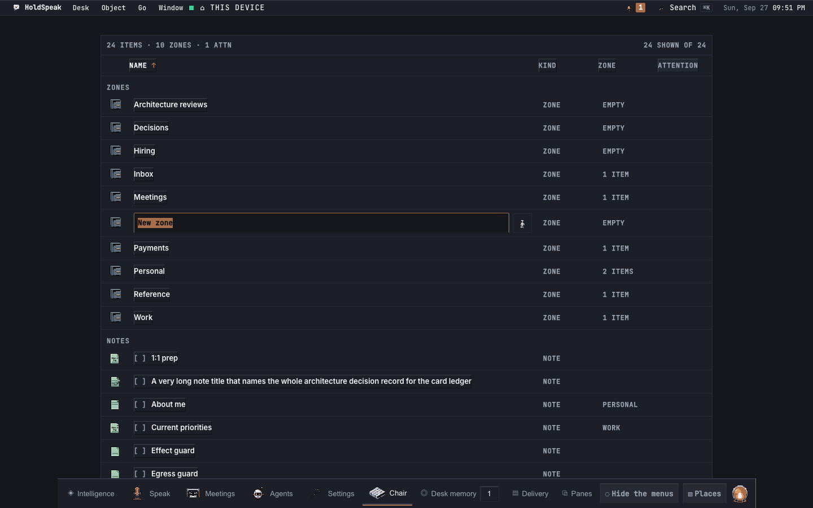
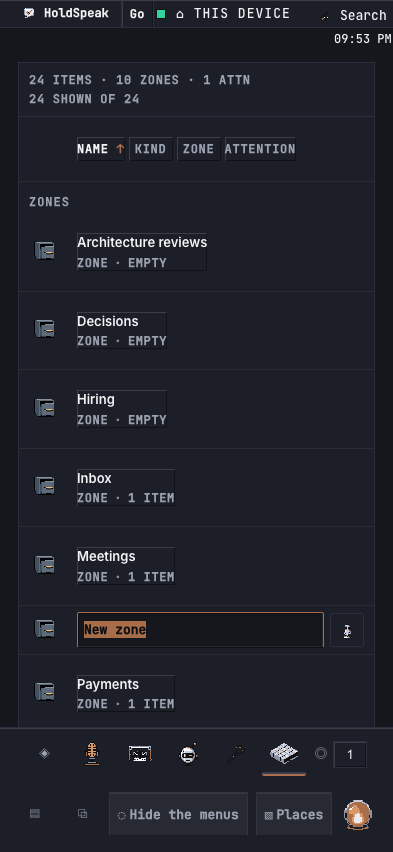
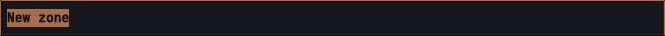
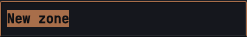
6 · The selection (palette)
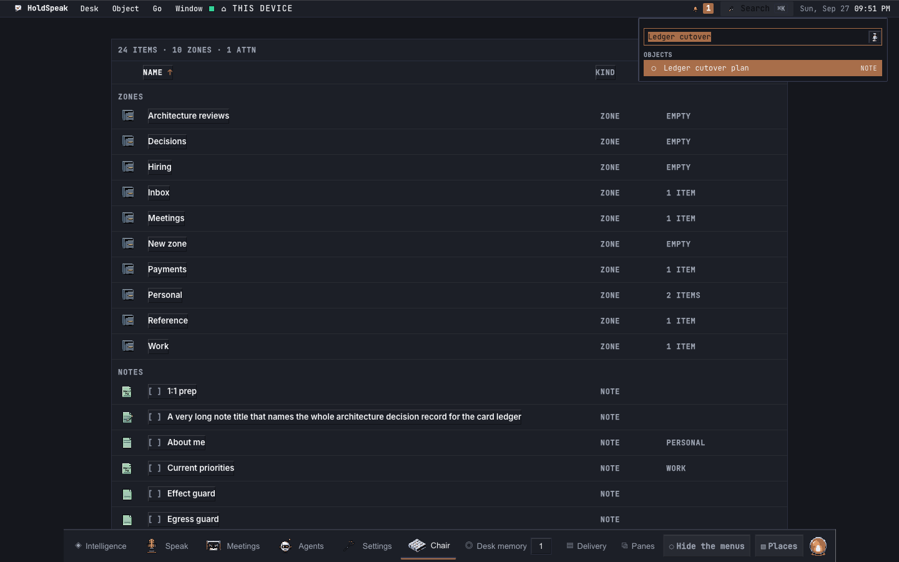
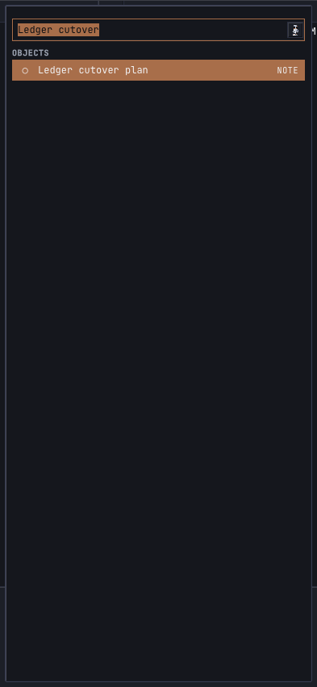